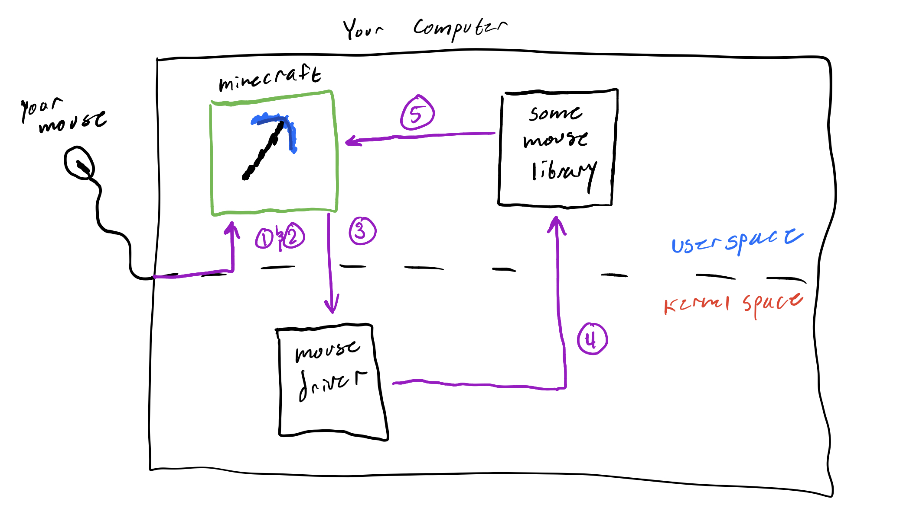

Introduction
Background
To start your journey into binary reversing and exploitation, you first need to understand the platform on which you reverse and exploit. As you are likely aware, you are currently on an operating system (OS): likely Windows or MacOS. Generally, people know the difference between these OS, but to be a good hacker you must understand these differences on a technical level. In future modules, we will talk about MacOS and Windows, but for now Linux will suffice.
What is Linux you may ask? Linux is the operating system of hackers! It is also the OS that most embedded devices and servers use. Linux is open-source, which means it is also an OS that is easy to develop on and learn (relative to the other ones). Right now it might not be clear what you would be developing that is related to the OS or how it is useful, but it will hopefully be more clear at the end of this section.
Linux
To get a better idea of what Linux is, read the first five sections of this article.
* * *
Now that you know what a distribution of Linux is, you can be informed that we will be using the mainstream, Debian based distribution Ubuntu. If you have found your way here through external hacking tutorials, you be tempted to use Kali Linux, a similarly Debian based distribution. I'll make the argument that it will be easier to use Ubuntu than Kali, and for the basis of these tutorials, the up-to-date kernel of Ubuntu is better.
TL;DR: We will use Ubuntu, almost none of the tools on Kali are needed for this.
In the next sub-section, we get Ubuntu installed.
The Kernel
Before going straight into using an operating system, it's nice to mention that there is a component of your computer that makes everything run―it's called the kernel. In a typical introduction to operating systems you would likely be introduced to this idea in-depth, but I will only briefly talk about it. If you are very interested, you should read this book after completing this handbook, as the content assumes you are already a systems hacker.
The kernel is the lowest running software that is always running when the computer is on. It's a fundamental part of the operating system that runs on your computer. If you imagined the computer as a stack of software and hardware, the kernel would be the line that divides the two:

The kernel is responsible for:
- making sure programs have somewhere to run (talked about later)
- hardware peripherals, like you physical mouse, actually do things
- your computer having enough memory to function
And various other tasks that set your computer apart from your toaster oven. It is often true that each operating system will have its own kernel that was designed to work with it.
Since this "program" called the kernel is always running and controls everything important, it's safe to assume that this program is at a higher level of existence than a normal program. Not only is it at a higher level of privilege than a normal program, but it is also at a higher level of privilege than an admin. The kernel is the god of this computing world, none come before it.
Luckily, this god known as the kernel is benevolent and allows measly normal programs to use parts of it when needed. Let's take my favorite game minecraft as an example.
Minecraft as an example
When you use a normal program, like Minecraft, you are running the program in user space. The user space is the virtual space of your computer where normal programs run. As expected, there exists a space for kernel things called the kernel space.
So you launch Minecraft, and load into your favorite world. You are in the user space. But now,
you move your mouse so that your view in Minecraft rotates -- you have now briefly entered
kernel space. Why? Because hardware caused something called an interrupt, which in the
god analogy is equivalent to praying to god for god for a brief blessing of power.
When you move your mouse this is what happens:
- The software that drives the mouse detects a movement
- The software causes an interrupt, which stops whatever else is running for a brief time
- It enters kernel mode by setting a value that signifies that it is "privileged"
- The kernel interprets the exact movement then sends the info back to user space
- The mouse move is handled in Minecraft.
You can visualize it like this (prepare for 3rd grade drawings):

TL;DR
The gist here is that there is a super privileged software running on every computer called the kernel. The kernel controls everything at the lowest level, and compromising it means you compromised everything above it―any software running on the computer. In our next section on virtualization, it's helpful to know this thing called the kernel exists.